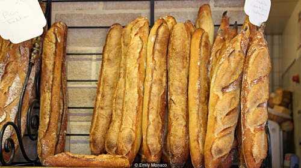

| |
Về quê hương quảng ninh của tôi: Với bờ biển dài 250km, thu hút khách du lịch với nhiều bãi biển đẹp như Bãi Cháy, Quan Lạn, Minh Châu, Ngọc Vừng, Trà Cổ, ... Ngoài ra còn có các danh lam thắng cảnh khác, trong đó Vịnh Hạ Long được công nhận là Kỳ quan thiên nhiên. Ngoài du lịch, tỉnh còn sở hữu một nguồn than lớn, mang lại lợi ích kinh tế lớn cho mảnh đất này. là vùng đất tập trung đa dạng sinh học với nhiều hệ sinh thái rặng san hô, rừng nhiệt đới, rừng ngập nước với hàng nghìn loài sinh vật.
Ngoài ra, tỉnh còn giàu giá trị văn hóa, lịch sử với các dân tộc anh em: Kinh, Dao, Tày, Sán Dìu, Sán Chay, Hoa. Bên cạnh đó cũng phải kể đến những đặc trưng văn hóa, đây là vùng đất nhiều di tích lịch sử và văn hóa như Yên Tử, đền Cửa Ông, sông Bạch Đằng,..
Du khách có thể lựa chọn một số danh lam thắng cảnh khác nhau trong khu vực này: du ngoạn trên Vịnh Hạ Long, nghỉ ngơi trên những bãi biển và hòn đảo quyến rũ, hoặc thăm một số ngôi chùa và đền… |
link fb của mình
 |